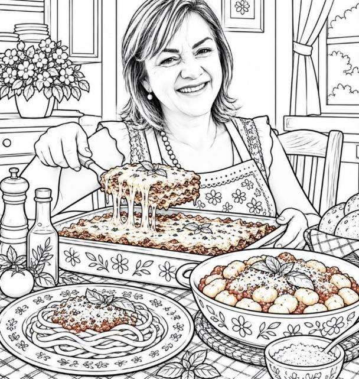

Os Sabores da Sogra Zelinda
“São tantas as receitas da sogra Zelinda que fica até difícil

escolher apenas uma.”
Pedir a Marta, esposa do filho Fábio, que escolhesse uma só receita da sogra foi quase uma injustiça. Ela pensou, voltou atrás e acabou escolhendo duas: a lasanha e o nhoque.
Não foi por acaso. Os dois pratos guardam o mesmo segredo, e ele não está na massa. Está no molho de tomate caseiro que só Zelinda sabe preparar: tomate maduro sem pele, cebola dourada devagar, uma pitada de
açúcar para quebrar a acidez e a carne cozinhando junto, sem pressa, até o molho engrossar e ganhar corpo. É esse molho que faz toda a diferença. Envolve cada camada da lasanha, abraça cada nhoque e deixa na memória o gosto de comida feita em família.
Há comidas que a gente come. E há comidas que a gente lembra. As de Zelinda, Marta guarda entre as segundas: daquelas que deixam saudade muito depois da última garfada.